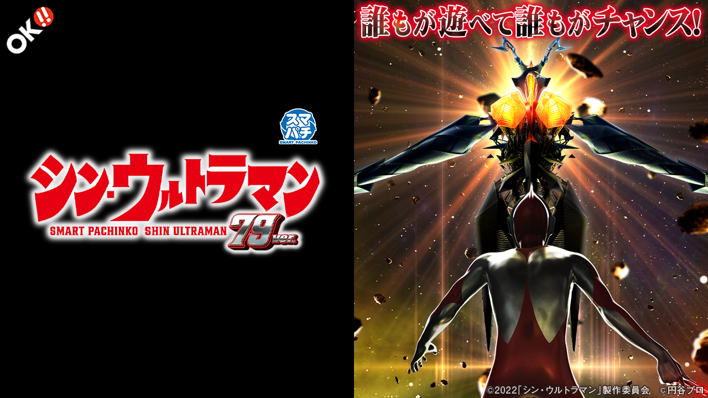

e シン・ウルトラマン 79ver.
初当り後は必ず1回転勝負。突破すれば約80%のゼットンATTACKへ。
- 導入
- 2026年9月
- メーカー
- オッケー.
- 分類
- パチンコ
主要スペック
通常時約1/79.9、初当り後は必ずウルトラバトルモードへ進む甘デジです。1回転の約33%を突破し、継続約80%のゼットンATTACKを目指す流れを簡易体験できます。
- 通常時約1/79.9・初回500個
- ウルトラバトルモード突破約33%
- ゼットンATTACK継続約80%
e シン・ウルトラマン 79ver.の見どころと計算条件
通常時約1/79.9、初当り後は必ずウルトラバトルモードへ進む甘デジです。1回転の約33%を突破し、継続約80%のゼットンATTACKを目指す流れを簡易体験できます。
シン・ウルトラマン79を数字で早分かり
結果では表記出玉と実獲得出玉を分け、250玉貸し・28玉交換の固定条件で差玉と収支を計算します。
30秒で分かるシン・ウルトラマン79
軽い初当りから1回転のPUSH勝負を繰り返したい人向けです。
こんな遊び方に向いている
- 短い当落演出が好き
- 約80%の1回転連チャンを試したい
遊ぶ前に確認したいこと
- 初当り後のバトル突入は100%
- ゼットンATTACK到達は約33%
初当り後は必ず1回転バトル
通常時の大当りは約1/79.9で、初回出玉は500個。大当り後は必ず時短1回のウルトラバトルモードへ進みます。
バトル中は約1/3.1を1回で抽選し、突破期待度は約33%。サイトではこの1回転をRUSH突入PUSHとして表示します。
ゼットンATTACKは約80%継続
ゼットンATTACK中は約1/1.26を時短1回で抽選し、継続率は約80%です。右打ち当りは300個70%・1000個30%。
当りごとに数字が1回転進み、PUSH後はラウンドと獲得玉数を読める時間だけ保持してから次の当落へ進みます。
P-スキップ搭載
通常時はP-スキップを利用でき、演出を飛ばして当落へ進む遊び方に対応しています。
サイトのスキップボタンは演出時間だけを短縮し、当選確率や抽選結果は変えません。
固定条件
- 17.5回/1,000円・250玉貸し・28玉交換で固定
- 平均初当り投資目安は約4,600円
- 1回転バトルをPUSH演出で表現
- 結果はマイ記録と機種別ランキングへ保存
平均回転と投資目安の計算
通常時のウルトラBONUS確率は約1/79.9です。当サイトでは、1,000円あたり17.5回転という機種別の固定条件を使い、平均投資目安を「79.9 ÷ 17.5 × 1,000円」で計算します。この条件では約4,600円が平均投資の目安です。
P-スキップ対応、250玉貸し・28玉交換で固定し、ゼットンATTACK突入率33%と継続率80%を簡易抽選します。表記出玉とは別に、打ち出しとオーバー入賞を簡易反映した実獲得出玉を収支へ使用します。平均値は長期間の理論上の目安であり、1回ごとの結果や実際の遊技収支を保証するものではありません。
シミュレーション結果の見方
当るまでウルトラBONUSまでの回転数と投資目安
RUSHゼットンATTACKへの突入と連チャン回数
出玉表記出玉と、打ち出しを反映した実獲得出玉
最終収支実獲得出玉を28玉交換で換算した収支目安
結果は自動で「マイ記録」に保存され、同じ機種を何回試したか、最高収支、勝率をあとから確認できます。
簡易シミュレーターについて
ウルトラBONUS・ゼットンATTACK・出玉の流れを固定条件で体験できます。JavaScriptを有効にすると、この位置にシミュレーター、演出、マイ記録、機種別ランキングが表示されます。
結果は娯楽・確率理解のための参考表示です。金銭的価値や交換価値はなく、実際の勝敗や収支を保証しません。18歳未満の方の利用はお控えください。
シン・ウルトラマン79のよくある質問
シン・ウルトラマン79はどんな台？
通常時約1/79.9、初当り後は必ずウルトラバトルモードへ進む甘デジです。 通常時約1/79.9・初回500個が主な確認ポイントです。
シン・ウルトラマン79の平均投資目安は？
当サイトの固定条件では1,000円あたり17.5回転として、平均4,600円が目安です。実店舗の回転率や持ち玉状況で変わるため、実収支を保証する値ではありません。
シミュレーターでは何を体験できる？
ウルトラBONUSまでの回転数、ゼットンATTACKへの突入、連チャンと出玉を固定条件で簡易抽選します。実機の全演出や内部状態を完全再現するものではありません。
出玉と収支はどう計算する？
スペック上の表記出玉とは別に、打ち出しロスとオーバー入賞を簡易反映した実獲得出玉を算出します。250玉貸し・28玉交換の固定条件で差玉と収支目安を表示します。